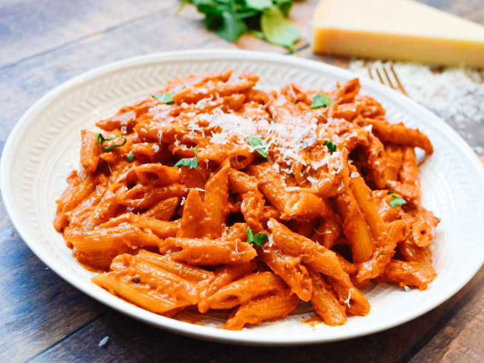

Penne Vodka Pasta

Description
This indulgent Italian classic tosses penne pasta with thick and creamy tomato-vodka sauce for an easy and impressive dish. Ready in just 30 minutes, it's perfect for both casual weeknights when you're craving something comforting and for a special date nights. The alcohol in the vodka is cooked off, leaving behind a sharp, clean flavor that mingles perfectly with acidic tomatoes and rich heavy cream in the sauce. Garnish the pasta with plenty of freshly grated Parmesan cheese and chopped fresh basil for an rich vegetarian dish that everyone is sure to love.
Ingredients
- 8 ounces penne pasta
- 3 tablespoons olive oil
- 1 large shallot, minced
- 2 cloves garlic, minced
- 1 (6 ounce) can tomato pasta
- 2 tablespoons vodka
- 1 cup whipping cream
- 1/2 teaspoon red pepper flakes
- salt to taste
- 1/4 cup freshly grated Parmesan cheese, or to taste
- 6 basil, thinly sliced
Steps
- Bring a pot of salted water to a boil. Cook pasta in boiling water until al dente, about 8 minutes; drain.
- Heat olive oil in a large nonstick skillet over medium heat. Cook and stir shallot and garlic in oil until softened, about 5 minutes. Stir tomato paste with the shallot and garlic; cook until deep red and starting to stick to the skillet, about 5 minutes.
- Pour vodka into the skillet and cook until evaporated, 1 to 2 minutes.
- Stir cream and red pepper flakes with the tomato mixture; season with salt. Cook until the mixture is very thick, 2 to 3 minutes.
- Remove pot from heat and toss penne noodles with the sauce to coat.
- Divide noodles between 4 bowls; garnish with Parmesan cheese and basil to serve.